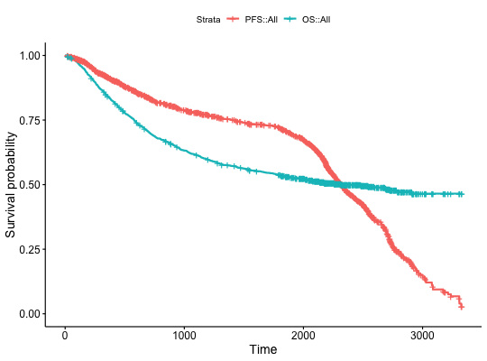
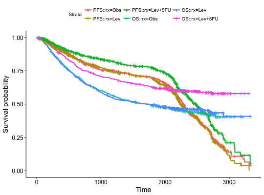

Combine multiple survfit objects on the same plot. For example,
one might wish to plot progression free survival and overall survival on
the same graph (and also stratified by treatment assignment).
ggsurvplot_combine() provides an extension to the
ggsurvplot() function for doing that.
ggsurvplot_combine(fit, data, risk.table = FALSE, risk.table.pos = c("out",
"in"), cumevents = FALSE, cumcensor = FALSE, tables.col = "black",
tables.y.text = TRUE, tables.y.text.col = TRUE,
ggtheme = theme_survminer(), tables.theme = ggtheme, keep.data = FALSE,
...)
Arguments
- fit
- a named list of survfit objects.
- data
- the data frame used to compute survival curves.
- risk.table
- Allowed values include:
- TRUE or FALSE
specifying whether to show or not the risk table. Default is FALSE.
-
"absolute" or "percentage". Shows the absolute number and the
percentage of subjects at risk by time, respectively.
- "abs_pct"
to show both absolute number and percentage.
- "nrisk_cumcensor" and
"nrisk_cumevents". Show the number at risk and, the cumulative number of
censoring and events, respectively.
- risk.table.pos
- character vector specifying the risk table position.
Allowed options are one of c("out", "in") indicating 'outside' or 'inside'
the main plot, respectively. Default value is "out".
- cumevents
- logical value specifying whether to show or not the table of
the cumulative number of events. Default is FALSE.
- cumcensor
- logical value specifying whether to show or not the table of
the cumulative number of censoring. Default is FALSE.
- tables.col
- color to be used for all tables under the main plot. Default
value is "black". If you want to color by strata (i.e. groups), use
tables.col = "strata".
- tables.y.text
- logical. Default is TRUE. If FALSE, the y axis tick
labels of tables will be hidden.
- tables.y.text.col
- logical. Default value is FALSE. If TRUE, tables tick
labels will be colored by strata.
- ggtheme
- function, ggplot2 theme name. Default value is
theme_survminer. Allowed values include ggplot2 official themes: see
theme.
- tables.theme
- function, ggplot2 theme name. Default value is
theme_survminer. Allowed values include ggplot2 official themes: see
theme.
- keep.data
- logical value specifying whether the plot data frame should be kept in the result.
Setting these to FALSE (default) can give much smaller results and hence even save memory allocation time.
- ...
- other arguments to pass to the
ggsurvplot() function.
Examples
library(survival)
# Create a demo data set
#::::::::::::::::::::::::::::::::::::::::::::::::::::::::
set.seed(123)
demo.data <- data.frame(
os.time = colon$time,
os.status = colon$status,
pfs.time = sample(colon$time),
pfs.status = colon$status,
sex = colon$sex, rx = colon$rx, adhere = colon$adhere
)
# Ex1: Combine null models
#::::::::::::::::::::::::::::::::::::::::::::::::::::::::
# Fit
pfs <- survfit( Surv(pfs.time, pfs.status) ~ 1, data = demo.data)
os <- survfit( Surv(os.time, os.status) ~ 1, data = demo.data)
# Combine on the same plot
fit <- list(PFS = pfs, OS = os)
ggsurvplot_combine(fit, demo.data)

# Combine survival curves stratified by treatment assignment rx
#::::::::::::::::::::::::::::::::::::::::::::::::::::::::
# Fit
pfs <- survfit( Surv(pfs.time, pfs.status) ~ rx, data = demo.data)
os <- survfit( Surv(os.time, os.status) ~ rx, data = demo.data)
# Combine on the same plot
fit <- list(PFS = pfs, OS = os)
ggsurvplot_combine(fit, demo.data)
